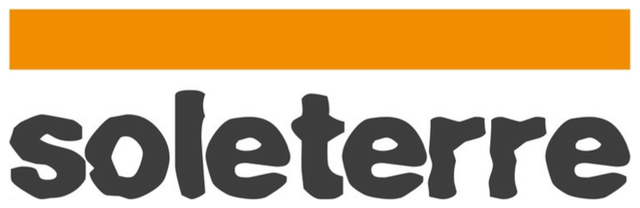

Comedian per Gaza 2026
12 ore di stand up per Gaza
La raccolta
in diretta da GoFundMe
La raccolta è su
GoFundMe
: inquadra il QR per donare.
Tutto il ricavato va alla
Fondazione Soleterre ETS
per i bambini e le famiglie dell'ospedale Nasser di Khan Younis, a Gaza.
